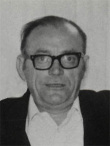

Francisco García Cantarero
Francisco García Cantarero 

 Haz clic aquí para detalles de la Familia de Francisco con Filomena Simarro Navarro
Haz clic aquí para detalles de la Familia de Francisco con Filomena Simarro Navarro
This page is within a frameset. View the entire genealogy report of García Cantarero families, or surname index of García Cantarero pedigrees or report summary of García Cantarero heritage from "Árbol Genealógico de Manolo y Amalia".
Make a family tree.
© 2006 GenoPro Inc. All Rights Reserved.